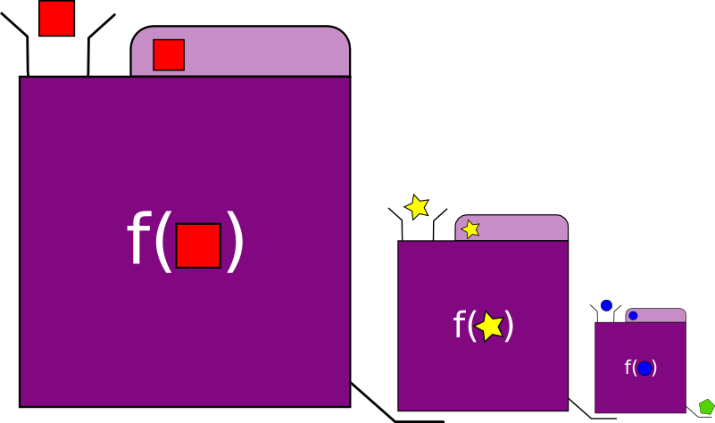
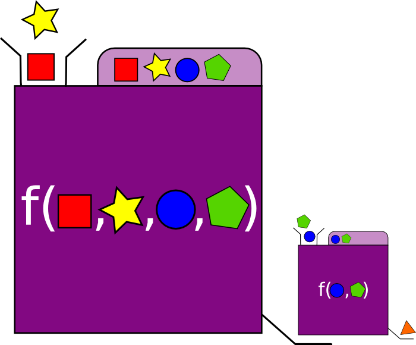
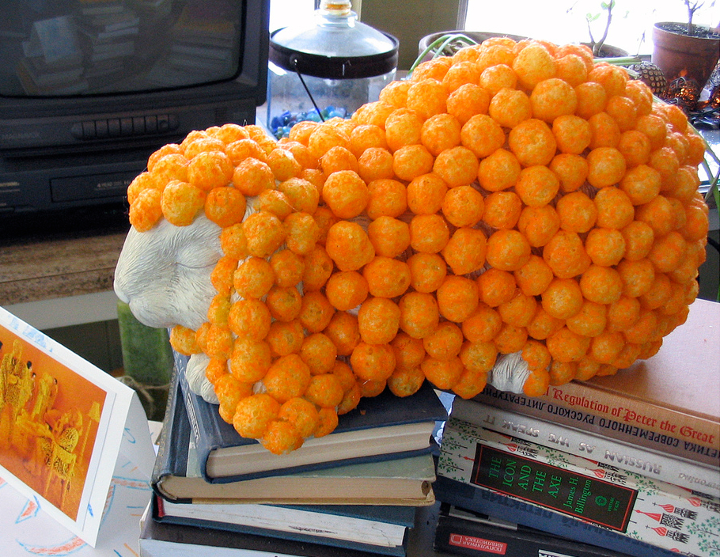

Higher-Order Fun

An introduction to functional programming
Katie Miller (@codemiller) OpenShift Developer Advocate at Red Hat


What is Functional Programming?
var add = function(arg1, arg2) {
return arg1 + arg2;
};
3 + " Musketeers";
// "3 Musketeers"
3 + " Little Pigs";
// "3 Little Pigs"
3 + " Amigos";
// "3 Amigos"
add(1, 2) + " Musketeers";
// "3 Musketeers"
add(1, 2) + " Little Pigs";
// "3 Little Pigs"
add(1, 2) + " Amigos";
// "3 Amigos"
var impureAdd = function(arg1, arg2) {
assessSituation();
if (warDeclared) {
console.log("Impending doom...");
launchMissile();
}
return arg1 + arg2;
};
impureAdd(1, 2) + " Musketeers";
// "3 Musketeers"
impureAdd(1, 2) + " Little Pigs";
// "Impending doom..."

Spot the Bug

First-Class Functions

Closures
var startsWith = function(name) {
var firstLetter = name.charAt(0);
return function() {
return "Name starts with " + firstLetter;
};
};
var myName = startsWith("Katie");
var languageName = startsWith("JavaScript");
myName();
// "Name starts with K"
languageName();
// "Name starts with J"
Modularity


FP Glue

"[T]o increase one's ability to modularize a problem conceptually, one must provide new kinds of glue in the programming language. ... [F]unctional languages provide two new, very important kinds of glue." - John Hughes
- Lazy evaluation
- Higher-order functions
Higher-Order Functions (HOFs)
- Take one or more functions as arguments, and/or
- Return a function as a result
Building Functions
- Function composition
- Partial application
- Currying


Language Support
| Language | Anonymous Functions | Closures | Higher-Order Functions | Partial Application |
|---|---|---|---|---|
| Clojure | Yes | Yes | Yes | Yes |
| JavaScript | Yes | Yes | Yes | ECMAScript 5 |
| Python | Partial; expressions only | Yes | Yes | 2.5 |
| Ruby | Yes | Yes | Different syntax; restrictions | 1.9 |
Source: Wikipedia
FP's Three Musketeers
To The Demo!

Map

Modus Operandi
- Applies given function to every element in a data structure
- Produces a new data structure
- Doesn't change the shape of the data structure
Imperative vs Functional
var list = ['Map', 'Filter', 'Fold'];
var imperative = function(list) {
var result = [];
for(var i = 0; i < list.length; i++) {
result.push(list[i].toUpperCase());
}
return result;
};
var functional = function(list) {
return _.map(list, function(str) { return str.toUpperCase() });
};
imperative(list);
// ['MAP', 'FILTER', 'FOLD']
functional(list);
// ['MAP', 'FILTER', 'FOLD'] Language Support
| Language | Native Support | Syntax | Notes |
|---|---|---|---|
| Clojure | Yes | (map func list) | |
| JavaScript | 1.6 | array.map(func) | Function is passed element, its index and array. |
| Python | Yes | map(func, list) | Returns list in 2, iterator in 3. |
| Ruby | Yes | enum.map {block} |
Source: Wikipedia
Visualising Map
Filter
Modus Operandi
- Applies a predicate to every element in a data structure
- Produces a new data structure containing only those elements for which the predicate function returns true
Imperative vs Functional
var list = ['Map', 'Filter', 'Fold'];
var imperative = function(list, letter) {
var result = [];
for(var i = 0; i < list.length; i++) {
if (list[i].charAt(0) === letter) {
result.push(list[i])
}
}
return result;
};
var functional = function(list, letter) {
return _.filter(list, startsWith(letter));
};
var startsWith = function(l) {
return function(s) { return s.charAt(0) === l }
};
imperative(list, 'F'); // ['Filter', 'Fold']
functional(list, 'F'); // ['Filter', 'Fold']Language Support
| Language | Native Support | Syntax | Notes |
|---|---|---|---|
| Clojure | Yes | (filter predicate list) | Can also filter with list comprehensions. |
| JavaScript | 1.6 | array.filter(pred) | |
| Python | Yes | filter(func, list) | Returns list or iterator (3.x). Also has list comprehensions. |
| Ruby | Yes | enum.select {block} |
Source: Wikipedia
Visualising Filter
Fold/Reduce

Modus Operandi
- A family of functions
- AKA accumulate, aggregate, compress or inject
- Processes a recursive data structure and reduces it to some value
- Applies a combining function to each element of the structure and a return value, or accumulator, that is built up as the structure is processed
- Accumulator may be given a starting value
- Can be left associative or right associative
- Can be strict or lazy
Imperative Approach
var sum = function(list) {
var acc = 0;
for (var i = 0; i < list.length; i++) {
acc += list[i];
}
return acc;
};
sum([1, 2, 3]); // 6
Recursive Pattern
var sum = function(list, acc) {
if (list.length === 0) { return acc }
return sum(list.slice(1), acc + list[0]);
};
sum([1, 2, 3], 0); // 6
var product = function(list, acc) {
if (list.length === 0) { return acc }
return product(list.slice(1), acc * list[0]);
};
length([1, 2, 3], 1); // 6
var reverse = function(list, acc) {
if (list.length === 0) { return acc }
return reverse(list.slice(1), [list[0]].concat(acc));
};
reverse([1, 2, 3], []); // [3, 2, 1]
Defining Fold
var foldL = function(func, acc, list) {
if (list.length === 0) { return acc }
return foldL(func, func(acc, list[0]), list.slice(1));
};
var sum = function(list) {
return foldL(function(acc, x) { return acc + x }, 0, list);
};
sum([1, 2, 3]);
// 6 = (((0 + 1) + 2) + 3)
var foldR = function(func, acc, list) {
if (list.length === 0) { return acc }
return func(list[0], foldR(func, acc, list.slice(1)));
};
var sum2 = function(list) {
return foldR(function(x, acc) { return x + acc }, 0, list);
};
sum2([1, 2, 3]);
// 6 = (1 + (2 + (3 + 0)))
var foldL2 = function(func, acc, list) {
for(var i = 0; i < list.length; i++) {
acc = func(acc, list[i]);
}
return acc;
};
// Prepend element
var cons = function(element, list) {
return [element].concat(list);
}
foldL(function(acc, x) { return cons(x, acc) }, [], [1, 2, 3]);
// [3, 2, 1]
return [3, 2, 1];return func([2, 1], 3);return func(func([1], 2), 3);return func(func(func([], 1), 2), 3);
return func(func(func([], 1), 2), 3);
foldR(function(x, acc) { return cons(x, acc) }, [], [1, 2, 3]);
// [1, 2, 3]
return [1, 2, 3];return func(1, [2, 3]);return func(1, func(2, [3]));return func(1, func(2, func(3, [])));
return func(1, func(2, func(3, [])));
return cons(1, cons(2, cons(3, [])));
More About Fold
- Fold Left is left associative; Fold Right is right associative
- Folds can be used to summarise structures such as lists, trees, or tables of data
- Fold Right can be implemented with Fold Left and Reverse, provided you are working with finite data structures; in Haskell, Fold Right can potentially operate on infinite lazy structures, while Fold Left cannot
Defining Map/Filter with Fold
var list = ['Map', 'Filter', 'Fold'];
var cons = function(element, list) {
return [element].concat(list);
};
var map = function(func, list) {
return foldR(function(x, acc) {
return cons(func(x), acc);
}, [], list);
};
map(function(str) { return str.toUpperCase() }, list);
// ['MAP', 'FILTER', 'FOLD']
var filter = function(pred, list) {
return foldR(function(x, acc) {
return pred(x) ? cons(x, acc) : acc;
}, [], list);
};
filter(function(str) { return str.charAt(0) === 'M' }, list);
// ['Map']Language Support
| Language | Native Support | Fold Left Syntax | Fold Right Syntax |
|---|---|---|---|
| Clojure | Yes | (reduce func acc list) | (reduce func acc (reverse list)) |
| JavaScript | 1.8 | array.reduce(func, acc) | array.reduceRight(func, acc) |
| Python | 2.x yes; 3.x in functools | reduce(func, list, acc) | reduce(lambda x,y: func(y,x), reversed(list), acc) |
| Ruby | Yes | enum.inject(acc, &block) | enum.reverse_each.inject(acc, &block) |
| Ruby Notes: | In 1.8.7+ symbol can be passed instead of block. If enumeration is array, use reverse instead of reverse_each. | ||
Source: Wikipedia
Visualising Fold
Choose Your Own Adventure

Gluing It All Together

Links, References and Credits

Links and References
Image Credits
- Beard (livingtheliminal, CC BY-NC-SA 2.0)
- Brendan Eich (Wikimedia Commons, CC SA 1.0)
- Cheese Belt (MookieLuv, CC BY-NC-SA 2.0)
- David Hasselhoff (Georges Biard, CC-BY-SA-3.0)
- Glue Statue (Thomas Knox, CC BY-NC-SA 2.0)
- Guido van Rossum (Wikimedia Commons, CC BY-SA 2.0)
- Kittens Reading (Catunes, CC BY-NC-SA 2.0)
- Longleat Maze (Bruce Stokes, CC BY-NC-SA 2.0)
- Modular Street (Joe Miserendino, CC BY-NC-SA 2.0)
- Old Idea (Fran Parra Carrión, CC BY-SA 2.0)
- Open Clip Art Library
- Perfect Camouflage (Nicole/monteregina, CC BY-NC-SA 2.0)
- Yukihiro Matsumoto (Wikimedia Commons, Public Domain)
Higher-Order Fun
http://hof.codemiller.com
Katie Miller (@codemiller) OpenShift Developer Advocate at Red Hat